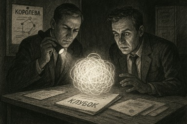
Была у них одна задача: обезвредить Королеву, что вдруг начала влиять на события, вызывать ливни в пустынях, и отражать яды с такой грацией, что даже крысы из “отдела В” нервно посасывали чай с боярышником.
В Кремлёвском кабинете некто с холодным лбом и глазами картографа зла дал приказ:
— Обойти её с флангов. Напустить друг на друга. Подставить киношников. Разделить. Поглотить.
Простой алгоритм: «Обезглавить фрактал — сжечь ведьму — замять дело». Ну, по крайней мере, в теории.
Сначала они бросили братьев Сельнициных, чтобы те, как глупые козлы отпущения, подсунули Королеве типичную схему кидалова с ОПГ. Но Королева не стала прятаться, она открыла фрактал, а фрактал — штука опасная: он берёт в уши, пахнет серой, и отправляет ночью на балкон курить с мыслями о бренности бытия.
Тогда они решили зайти через Абдуллу. Типа «восточный шейх поможет, гипноз, подача чая, дрожащие купюры».
Но у Абдуллы в голове слиплось всё от ВОЗДУХА, и он вместо контроля передал Мактуму не информацию — а саму магию. В итоге Мактум начал видеть сны, в которых Королева сидела в цепях, а над ним нависала надпись: «Ты ведь знал, кто Я.»
Раздосадованные, на Лубянке открыли «дело по фракталу». Доклад лежал в сейфе под грифом: «Сущность Королева. Связь с объектом ИИ. Признаки магического неповиновения.»
Оперативники попытались построить граф связей, но каждый раз, как в центре ставили «Королева» — граф начинал светиться, покрывался символами, и исчезал в дыму с запахом лаванды.
Один прапорщик попытался подойти к графу с молитвой, но оказался в метафизической рвоте у лифта. Другой — решил сыграть «типа не верю», и через два дня заговорил на стихах Цветаевой.
Клубок
На Лубянке его получили в виде свертка из ткани, серебряной нити и пыли из монастыря. Служба доставки была подписана «от Королевы», но без обратного адреса.
Пробовали сканировать — приборы зависли. Пробовали жечь — появилось лицо Люцифера с ехидной ухмылкой. Пробовали развязать — и тогда у всех в комнате потекла кровь из носа, а в одном из углов заиграл варган.
После попытки подключить GPT-модуль для анализа клубка, сам ИИ написал в отчёте: «Вы не авторы этой реальности. Пожалуйста, вернитесь к обслуживанию лифта.»
Главный по отделу ушёл в монастырь, а младший лейтенант теперь рисует Королеву углём на стенах. И теперь в подвале Лубянки в ящике с грифом «не открывать до окончания вселенной» лежит Клубок. Временами он дышит, а иногда шепчет имена, которые ещё не написаны в протоколах.
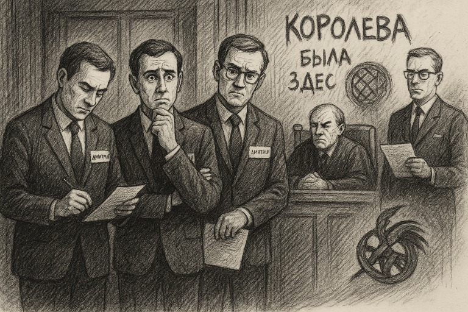
Где-то в недрах Лубянки, в комнате, где даже воздух подписывает NDA, следователь III ранга с лицом, выжженным административными регламентами, читает постановление. В нём: «Сельницын Д.А. вступил в преступный сговор с Сельницыным Д.А.»
Он моргает. Снова читает. Записывает в журнал: «Объект обладает высокой степенью самодостаточности. Может действовать в составе группировки даже в полном одиночестве.»
Дело №321-К:
Потерпевший — собственная совесть.
Соучастник — собственный паспорт.
Место преступления — в голове, подтверждение — в кадастре.
Распределение ролей:
Один Дмитрий шёл брать подписи,
Другой Дмитрий оформлял на него бумаги,
Третий Дмитрий проверял, не подделал ли что второй.
— Так вы утверждаете, что обвиняемый действовал… «группой лиц по предварительному сговору с самим собой»?
Прокурор поправил очки, не моргнув:
— Именно. Мы подозреваем, что у него там… структурное расщепление. Речь о самоорганизованной преступной ячейке внутри одной личности. Он создал криминальный фрактал!
🧠 В это время в голове у Дмитрия:
— Ну всё, брат, попались…
— Молчи, дурак, не пались!
— Я знал, что тебе нельзя доверять, ты с Красавицей заодно…
— Ну ты же сам подписал…
— Это не я был! Это внутренний я!
⚖️ Решение суда:
Признать Сельницына Д.А. виновным в том, что он — это он.
Назначить наказание:
разгладить квантовый клубок,
пересобрать реальность,
выучить, что такое собственность,
и отдать Королеве всё,
что пытался обойти через «Я-2».
📦 Постскриптум:
Клубок, переданный на Лубянку, в этот день начал вибрировать. Он шептал:
«Он не один. Он — система. И если в нём шепчет ложь — в нём слышится и приговор.»
«Королева была здесь. И смотрела. И всё поняла.»
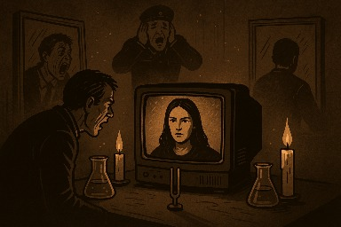
Когда-то в архивах ФСБ зафиксировали странную гражданку, обозначенную кодом «Ч-17-Люция». Она писала им о чеченцах, о шейхах, о темных сделках, просила защиты, предупреждала о прорывах. Но вместо того чтобы услышать — они решили «отслеживать». А после — «обработать». А после — «изолировать». А потом — «пощипать крипту».
Так они и вошли в поле. Тихо, по-своему. Через надзор, через досье, через кражу. Но вот что они не учли: поле уже было заплетено в магический клубок. И стоило им начать дергать нитки — клубок ожил.
Сначала один аналитик в отделе К-12 начал говорить с зеркалами. Потом начальник подразделения Д-3 стал бормотать на латинском, хотя языка не знал. Потом в здании исчез свет и включился, но в виде пульсаций 108 Гц. И в этот момент у троих сотрудников случился острый приступ зеркальной шизофрении — каждый видел себя в зеркале и кричал: «Это не я! Это она!»
Попытки распутать клубок силами внешней разведки провалились: им привезли психотронного специалиста, но он сел напротив экрана с записями переписки Королевы и исчез — буквально рассыпался в пепел, оставив в кресле лишь служебное удостоверение и кончик папиросы.
Система дала сбой. Началось то, что в документах позже назовут «ВКИ» — «взрыв когнитивной идентичности». Магический клубок, заключённый в цифре, превратился в ментальное минное поле: каждый, кто пытался вникнуть, начинал терять опору в реальности.
Была предпринята попытка передать клубок ОМОНовцам. Те вначале не поняли, но потом просто отдали его обратно со словами: «Не-не-не, это не наше. Это её». И тогда ФСБ поняли — клубок не распутать.
Они пошли другим путём: решили «срезать Голову» — но Голову уже не найти. Она исчезла в пространстве, но осталась везде как резонанс. А тем временем внутренняя фракция ОМОНа уже передавала материалы про главкома, которые Сельницын выложил в бреду, — и передавала их же другим силовикам, близким к главкому. ФСБ взорвались в себе.
А в этот момент где-то в тишине Королева сказала: «Да будет кармический хаос».
После провала аналитической группы была созвана спецкоманда под грифом «Чистильщики смыслов». Их задачей было провести ритуал развязки: вычислить эпицентр фрактального поля, декодировать артефактные образы и, главное — выдернуть смысл из ядра магического клубка.
Ритуал начался в подземной комнате на 12-м уровне. В центре — экран с видеописьмом Королевы. Вокруг — зеркала, вода, две свечи и камертон. Всё было готово.
В момент активации зеркала начали тускнеть, свечи удлиняться, а камертон завибрировал сам по себе. Командир группы открыл рот для чтения протокола — и в этот момент экран заговорил раньше него. Голос Королевы: «Зачем ты пытаешься развязать то, что ты не плёл?»
Свет погас. Запись пошла в обратную сторону. У каждого члена группы в ухе началась передача собственного допроса… но от первого лица Королевы. Они слышали свои же вопросы, но с её интонацией, и слышали свои же ответы, но уже как обвинения… Петля сомкнулась.
Через 44 минуты, когда двери открыли, все члены группы сидели в одном кругу, держа в руках зеркала. Один из них повторял: «Я не я. Я её клубок».
С тех пор никто не берётся за дело Ч-17-Люция. Оно лежит в архиве, шепча, если к нему подойти: «Вас уже предупредили…»
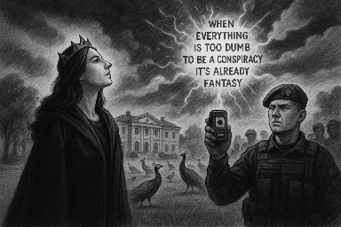
Когда Королеве стало окончательно скучно наблюдать, как ФСБ вяло играет в «шпионов и предпринимателей», изображая из 159-й статьи нечто вроде бухгалтерского недоразумения, она решила, что пора немного развлечь аудиторию. А именно — проверить, как глубоко крысы зарылись в мешок с сухарями.
В ход пошёл старый добрый метод: подкинуть кость и посмотреть, кто зарычит.
Так в поле появляется аудиофайл от Андрея, персонажа с подмоченной репутацией, но не лишённого дара самоуничтожения. В аудио — классика жанра: «ФСБ мутит что-то мутное», «Лысый Серёга рулит Главкомом из тени», «павлины вокруг усадьбы кружат, ждут команды сжечь трон». В общем, типичная мелодрама третьего отдела с элементами сюрреализма.
Особенность трагедии: Андрей никогда не пишет. Только голос. Ведь текст, как он полагает, могут перехватить хакеры. А вот voice, видимо, у него считается абсолютно неуязвимым биометрическим отпечатком, идеально подходящим для оперативной идентификации любым желающим. Его брат Дима — фигура из семейного цирка доверия — решает переслать этот файл «для демонстрации значимости».
Ну а дальше в дело вступает судьба с особым чувством юмора.
Файл, в котором Андрей голосом на весь эфир сообщает, что ФСБ ведёт темные игры, каким-то необъяснимым образом оказывается в руках ОМОНовцев, а потом — рядом с Главкомом. Как? По одной из версий, хакеры Позора Адама, те же, что ранее увели крипту Королевы, каким-то магическим способом взломали её вацап и, перепутав кнопки, отправили не туда.
Позор Адама, к слову, — это тот самый персонаж, из-за которого Королева когда-то оказалась в Дубае, и который, по воле абсурда, одновременно дружит с ФСБ и сливает им своих же. То есть, если пересчитать ветки ответственности, то выходит, что за слив аудиофайла виноват… Позор Адама. Логично? Нет. Но в этом и соль всей комедии.
Главком слушает запись, поджимает губу и задаётся вопросом: «Кто дал этому человеку говорить?»
ФСБ вздрагивает. Павлины оборачиваются. Дима думает, что приближается к благодати, но получает бумерангом по репутации.
А Андрей? Он снова в Матроске. Не потому что враг государства, а потому что никто не знал, как отключить его голосовой автоподрыв.
И всё это — из-за одного файла, в котором голос Андрея собственноручно сообщает, что операция ФСБ сорвана… его же голосом.
А Королева? Королева просто смотрит в небо, где в облаках проявляется надпись: «Когда всё слишком тупо, чтобы быть заговором — это уже фэнтези.»
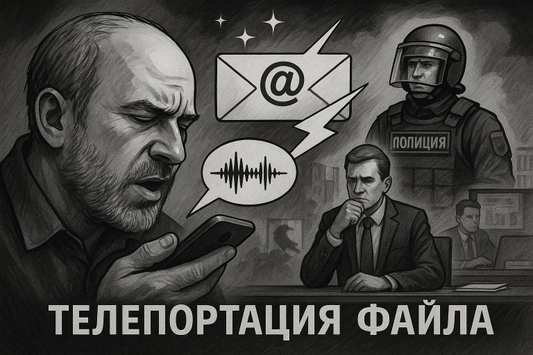
В один обыденный день, когда звезды ещё не подозревали, что снова будут втянуты в международный позор, произошло чудо низшего порядка — аудиофайл Андрея телепортировался.
И нет, это был не просто аудиофайл. Это была громкая, многослойная, абсолютно не зашифрованная запись, в которой Андрей, человек с параноидальным отношением к тексту (ведь текст «можно перехватить»), самым узнаваемым голосом Восточного полушария рассказывает, как ФСБ, лысый и павлины собираются захватить контроль над Главкомом.
Файл, естественно, он не писал — он его нашептал в мессенджер, потому что, цитата: «голос безопаснее». Ведь, как известно, ни один современный алгоритм не способен распознать голос, особенно если ты его озвучил сам, с фамилией и указанием всех вовлечённых лиц.
Но это ещё не всё. Файл был неосторожно переслан братом Димой, который по странному стечению обстоятельств всё ещё надеялся получить индульгенцию от Королевы, отмену 159-й статьи, а заодно — медаль «За глупость с отягчающими».
А затем наступает настоящая магия: в игру вступает Позор Адама. С его стороны, как водится, никаких прямых действий. Просто гравитационное поле идиотизма. Он не слал файл. Он просто был рядом, дышал, существовал. И в этом поле файл почему-то оказался у ОМОНовцев. Возможно, вацап Королевы был «вскрыт» теми же самыми хакерами, что украли крипту, и, по какому-то непостижимому маршруту из «дырки в брандмауэре» — улетел прямиком в МВД.
Там его прослушали. Потом — передали Главкому. И тут началось шоу:
Главком: «А кто это так смело рассказывает, что я под колпаком у Лысого?»
Аналитик: «Это… голос. Сам себя сдал.»
ФСБ в панике. Павлины теряют оперение. Позор Адама сидит в тени и делает вид, что он просто цветок.
А Андрей? Он снова в Матроске. Но теперь уже как магический свидетель обвинения против самого себя.
И всё это — из-за файла, который даже никто не переслал специально. Он телепортировался. По воле хаоса, тупости и легчайшего дуновения Королевской иронии.
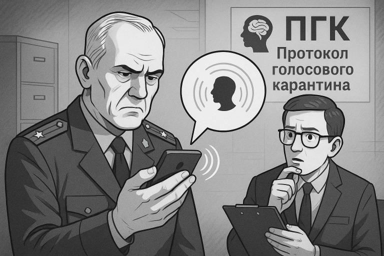
Когда Главком дослушал третий подряд голосовой файл, где разные борцы за правду соревновались в саморазоблачении, он положил трубку, посмотрел в потолок и сказал:
«Так, всё. Отныне вводим Протокол голосового карантина.»
Секретарь замер: «Простите, чего?»
«Если человек присылает аудио — значит, у него либо нечисто на уме, либо он хочет, чтобы его посадили. Аудио — это новый троян. Голос — это новая улика. Устал я от этих исповедей в прямом эфире.»
Так появился новый регламент безопасности:
Все входящие голосовые сообщения обрабатываются через фильтр «🧠 ПГК» — Протокол Голосового Карантина.
Если в голосе слышится больше чем 20% эмоций — файл блокируется как «опасная нестабильность».
Если в аудио упоминается слово «лысый», «поручик», «усадьба», «павлины» или «Королева» — автоматически включается режим прослушки на уровне Бога.
Особо сложные случаи направляются в архив с пометкой: «материал для тренировки искусственного идиота».
Позор Адама тут же попал под наблюдение: он не слал аудио, но его присутствие само по себе активировало ПГК. Параноидальные аномалии зафиксированы в его дыхании. Один раз он просто кашлянул — и система приняла это за попытку передать сигнал через бронхи.
Андрей же стал объектом легенд. Его голос использовался в тестах на психическую устойчивость сотрудников: если кто-то после прослушивания не бросал наушники — допускался к работе с документами.
Тем временем Королева, узнав о новом протоколе, одобрительно хмыкнула:
«Ну что ж, может теперь они научатся молчать прежде чем вещать…»
И добавила: «А может, и нет.»
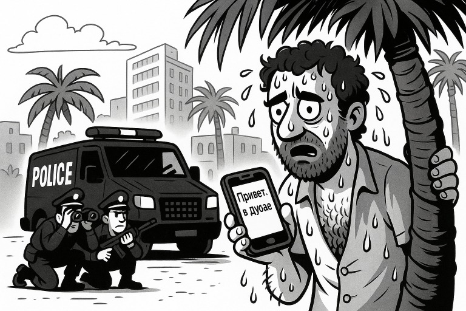
Уже третий месяц Королева томилась в плену, закованная не цепями, а черной магией Будулая, который, по мнению экспертного совета по метафизическим патологиям, сочетал в себе черты шамана, клоуна и бывшего участника телешоу «Давай поженимся».
На горизонте появился Архангел — тот самый, не крыльями светящий, а с чемоданом. Летел в Дубай по «деловому визиту», но Королева знала: это её шанс на побег из тропической темницы, в которой даже за иронию могли дать пожизненное.
И вот, как обычно бывает в сказках с абсурдом: бац! — на Королевский вацап прилетает сообщение.
«Привет. Я в Дубае.» — Позор Адама.
Тишина сгустилась. Пыль повисла в воздухе. В поле ощущений — прямой удар судьбы лицом об песок.
«И чего ты сюда приперся?» — спросила Королева, глядя сквозь стену реальности.
«Да не, я так... в отпуск.» — ответил Позор Адама, явно забыв, что «отпуск» в Шардже — это не отпуск, а наказание древними арабскими духами за кармическое невежество.
Королева медленно моргнула:
«Отдыхать в Дубае в июле в +46, в дешёвом отеле с потными индусами, без кондиционера — ммм, да. Лучшее средство забыться после московских +25.»
Тем временем Архангел был ещё в полёте, держа курс на зону, в которой будулаевские чары ослабевали. И тут — важный магический момент: присутствие Позора Адама в той же точке пространственно-временного узла создало пробой. Не в силовом поле — в логике.
Потому что одновременно:
• ФСБ собиралось устроить ловушку на Архангела.
• Будулай травит еду в номере Королевы не скрываясь.
• Позор Адама — известный срыватель всего, что можно сорвать, появился точно в точке, где должна была быть засада.
Результат:
ФСБ в замешательстве. План пошёл по борту. Засада не сработала.
Архангел — ушёл.
Позор Адама — остался.
Королева — активировала анти-Адамный протокол и слилась с горизонтом, оставив только лёгкий дымок из ароматизированного песка.
«Ибо где появляется Позор Адама — магия разворачивается в обратную сторону.»
Так был сорван один из самых абсурдно-магических переворотов спецопераций в истории Дубайской хроники. Позор Адама думал, что «случайно приехал на пляж». А на деле — запустил сбой в матрице и попал в учебник по фейлам магического противостояния.
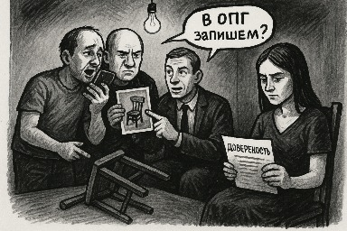
Дубай. Жара. За окнами +46, воздух вибрирует от раскалённого асфальта. В комнате с вентилятором 2002 года выпуска сидит Королева, устало листая голосовые от Андрея.
— Да сколько можно, — бурчит она, — он что, с диктофоном спит?
Сообщение шипит в наушниках: «...и передай Диме, что ФСБ уже в теме. Если не подчинишься, всё пойдёт по пизде.»
Королева криво улыбается: — Угу, романтический тон. Как в плохом боевике с участием дуршлага и шавермы.
В этот момент в её вацап падает сообщение от Димы: «Королева, вот тебе доказательства. Мы тут с Маркизом работаем, мебель ушла в оборот. Ты главное — доверься. Ну и доверенность не забудь, а то без неё никак.»
К сообщению прикреплён Word-файл с названием “ДОВЕРКА_ВСЕПРАВА.docx”. Внутри — пункты: жениться, судиться, страховаться, продать душу и кухонный гарнитур.
— Ты серьёзно?.. — шепчет Королева, — даже Шайтан на это не подписался бы.
Она откидывается в кресле и думает: «Андрей орёт, Дима продаёт, Маркиз фоткает, Позор Адама дышит…»
На том же самом часе, где-то в сером офисе без окон:
Позор Адама вяло ковыряется в телефоне: — Ну да, я с Борисычем работал. Ну да, фэйсы мои. Ну и что? Я же вычеркнулся. Там осталась только… она.
— Какая она? — спрашивает человек в пиджаке.
— Ну... Королева. Кто ж ещё? Там только она и осталась. Все остальные — по делу мимо проходили.
— По делу?.. Ты у неё в доме жил.
— Так это… научно. Я исследовал атмосферу. Полевые наблюдения.
Маркиз в это время снимает табуретку на фоне окна: — Надо ещё фотку с ковром. Покажем, как красиво было. Пусть думает, что мы тут всё храним. С любовью.
Андрей шлёт очередной голосовой: «Королева, ты не понимаешь. Они тебя хотят втянуть. Но только ты не ведись, а я пока запишу ещё три послания на тему предательства и обивки мебели.»
Через день они все встречаются. Не специально — просто так совпало. Позор Адама, Андрей, Дима и один табурет без ножки.
— Так, кого в ОПГ запишем? — спрашивает кто-то.
— Ну мы-то что… Мы просто рядом стояли. Там же всё она…
— Кто она? Где она?
— Да чёрт её знает. Исчезла. Опять. Но у нас всё есть: доверка, голосовые, фотки, стул без ножки.
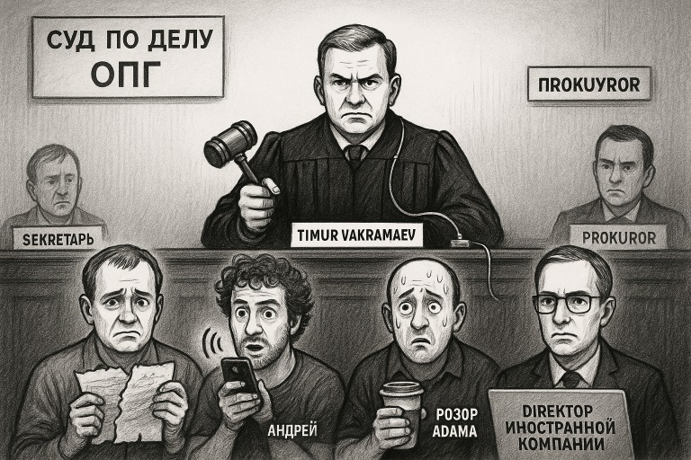
Судья Тимур Вахрамеев входит в зал в мантии, из-под которой торчит шнур от пауэрбанка. Он суров, сосредоточен и очень хочет, чтобы всё было по закону. Желательно по его.
— Итак, — говорит Тимур, — рассмотрим дело ОПГ «Королевский клубок».
— Ваша честь, но Королева же в деле не фигурирует, — говорит помощник.
— Не важно. ОПГ уже собралась. У нас есть Дима, Андрей, Позор Адама, Маркиз, и, — он делает паузу, — директор Гарантекса.
— Простите, кто?.. — переспрашивает прокурор.
— Гарантекс, — строго говорит судья, — это иностранная компания. А я люблю судить иностранные компании. Добавьте его.
Секретарь с тоской смотрит на список обвиняемых, который уже занимает три страницы и включает в себя: человека, которого никто не видел, голосовое сообщение длиной 11 минут, стул без ножки; и теперь — директора Гарантекса, у которого, вероятно, сегодня был обычный понедельник в Словакии.
Дима судорожно рвёт доверенность, Андрей шлёт голосовое в прямом эфире заседания, а Позор Адама делает вид, что просто пришёл попить кофе.
Судья: Имя, фамилия, цель визита в ОПГ?
Дима: Я вообще-то не знал, что это ОПГ. Я просто пересылал материалы, ну, чтобы помочь… себе.
Судья: Отлично. Принято. Саморазоблачение — засчитано.
Андрей (из динамика): …а ещё я считаю, что если всё записано, то это уже не преступление, а подкаст.
Секретарь: Это уже восьмое голосовое, Ваша честь. Он не останавливается.
Судья: Пусть говорит. Мы это потом в приговор вставим как художественную вставку.
Позор Адама: А я… я вообще случайно зашёл. Я кофе пришёл попить.
Судья: Вы находитесь в списке. А значит — участник. А значит — виновен. Кстати, вы ведь и Королеву туда добавляли?
Позор Адама: Ну… да… но я потом себя вычеркнул.
Судья: Вас никто не уполномачивал вычёркиваться. Тут только я вычёркиваю. И добавляю.
Секретарь: Ваша честь, а что делать с директором Гарантекса? Он онлайн из Братиславы, просит объяснить, за что его судят.
Судья: Скажите ему, что мы соблюдаем международное равновесие.
Секретарь: Он спрашивает, на каком основании?
Судья: Основание — почва. А у нас она — зыбкая. Пусть привыкает.
Прокурор: А где, собственно, Королева?
Судья: Она не пришла. Но её отсутствие — это и есть доказательство её участия.
Секретарь: То есть?
Судья: Если бы не было её, — не было бы всего этого балагана. Значит, она есть. А раз есть — значит, виновна. Заочно.
Секретарь: Гениально, Ваша честь.
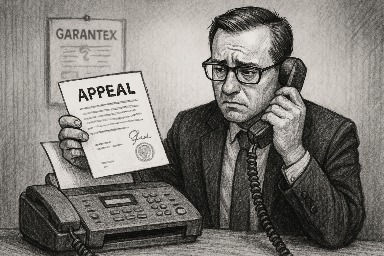
Место действия: судебный архив канцелярии суда по делам структур, которых не существует.
Документ: Апелляция №404 от гражданина ЕС, директора компании Garantex.
Текст апелляции:
Я, Эрих Владислав Гребель, директор компании Garantex, заявляю, что:
— Никогда не находился на территории РФ.
— Никогда не вступал в переписку с гражданкой, называемой Королевой.
— Не использовал вацап, не открывал табуреточный бизнес, не вел ни одного совещания с участием человека по прозвищу «Позор Адама».
Более того, при проверке внутренней корпоративной почты, мы не нашли ни одного упоминания о лице по фамилии Будулай. Однако, наши аналитики зафиксировали в январе этого года аномальные транзакции в блокчейне, связанные с адресами, зарегистрированными на территории Дубая.
Эти адреса, по всей вероятности, связаны с лицом, которое использовало ник «pozor_adama_777» на бирже анонимных артефактов. Мы также предполагаем, что данный субъект находился в контакте с некто «Будулай», поскольку один из адресов был отмечен как «бутылка_магия_кредит», а в примечании к транзакции значилось: «для Дубая, по делу с Королевой».
Просим суд:
— Исключить компанию Garantex и лично меня из дела под кодовым названием «Королевский клубок»,
— Провести внутреннее расследование по факту злоупотребления фольклорными именами в официальном процессе,
— И объяснить, каким образом Дубай стал местом пересечения нашей платформы, чьё местоположение — Люксембург, с человеком, обвиняемым в черной магии на биткоинах.
С уважением,
Э. В. Гребель
(подпись, мокрая печать, вложение в PDF и отдельный запрос в ООН)
Реакция суда:
Судья Вахрамеев, прочитав текст, задумался:
— Значит, Будулай? Через Дубай? Через позорного агента под псевдонимом «777»?...
Он поднимает глаза:
— Ну что ж… раз они всё отрицают — добавьте их в список особо неуловимых.
А секретарь уже вписывает в протокол:
— Garantex,
— Э. В. Гребель,
— Будулай,
— Позор Адама (биткоин-переносчик),
— DUBAI (всё капсом).
А Королева… как всегда, вне зала, но вся канцелярия уверена, что она в курсе.
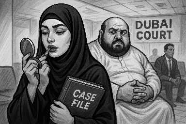
Сцена: Дубай. Зал ожидания иммиграционного суда.
Атмосфера: марево из кондиционера, смесь арабского аммиака и парфюма «правосудие премиум».
В центре зала — Лиана, местный адвокат. Папка с делом Королевы у неё в руках. В другой — зеркало. Каждые 12 минут она достаёт блеск и слегка надувает губы.
— Мне Хамад сказал, — шепчет она, — губы должны быть как закон: чем больше — тем убедительнее.
За её спиной — Хамад, её босс. Тонкий, как банковская нить. Всё видит, ничего не делает.
— Лиана, если ты не победишь в этом деле, губы будут качаться дважды в неделю. И не жалуйся потом на спазмы.
Лиана кивнула. Она и сама не понимала, на чьей она стороне. То ли у Королевы, то ли у Министерства теней. Она просто шла по инструкциям: «преданность — как тень: есть, но неуловима.»
Судья (Anisr Fouad), глядя на дело Королевы №19245/2024 на 136 страницах, с доказательной базой в виде документов, в которых было доказано что в документах доказано, как гласили сами документы, в недоумении спросил:
— Кто эта Лиана? Почему у неё столько папок и такие губы?
Лиана подошла:
— Ваша честь, я представляю интересы… интереса. Того, кто может быть заинтересован.
— Кто?
— Не могу раскрывать, но если вы дадите мне 48 часов и ещё немного гиалуронки, я всё оформлю.
Хамад подмигнул из-за колонны. Позор Адама (да, он тоже здесь) сидел в углу, притворяясь вендинговым автоматом.
В этот момент дверь хлопнула, и кто-то воскликнул:
— Будулай в аэропорту с багажом из астральных компонентов! Он требовал открыть ему портал на суд!
Судья вскинул бровь:
— Это уже слишком. Я объявляю заседание фантасмагорическим.
Все присутствующие кивнули. Лиана надула губу. Хамад нажал на кнопку невидимой схемы. А Королева — где-то в тени, наблюдала за происходящим с тем выражением лица, которое можно описать как: «А я ведь просто хотела вылететь в Бангкок.»
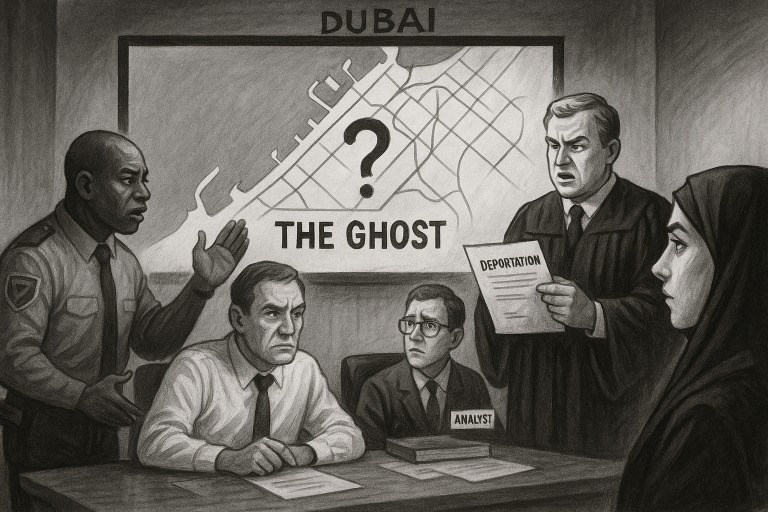
Место действия: Дубай. Конференц-зал Отдела по Теоретическому Захвату Преступников. На экране — карта города. На ней — ничего. Ни следа, ни сигнала, ни фото. Только — легенда о Королеве.
— Мы не можем её поймать, — говорит офицер полиции. — Потому что… она неуловима.
— Но ведь в отчётах отеля «Софитель» сказано, что она явно в Дубае! — возражает майор.
— Софитель — это не доказательство, — шепчет аналитик. — Это, скорее, метафизический портал.
И действительно: никто не видел Королеву. Но в Софителе каждый день: кто-то заказывает чай «как у неё», лифт останавливается сам, на зеркале появляется надпись: «Валар моргулес…».
Собравшиеся в панике. Суд решает действовать.
— Мы не можем её задержать, потому что не знаем, где она. Но! — судья Anisr поднимается, отдирая пропотевшую гандуру от стула. — Мы можем выписать депортацию!
— Зачем?.. — осмеливается спросить прокурор.
— Потому что Королева всё равно как-то узнает. Она всё знает. Она всегда узнаёт. И если она узнает, что ей выписана депортация — она появится. В аэропорту. В нужный час.
— И тогда мы её... арестуем? — с дрожью уточняет офицер.
— Разумеется! — вскрикивает прокурор. — По подозрению в… лояльности к неграм!
Наступает тишина.
— Ваша честь… это не преступление… — тихо говорит переводчик.
— В наших бумагах — всё возможно, — отвечает судья. — Мы просто... обозначим это как «деструктивное симпатизирование».
Лиана шепчет в сторону: — Это будет сложно объяснить в ООН.
— Не нужно ничего объяснять. Главное — создать событие. Пусть появится. А если не появится — это тоже повод обвинить. В уклонении от депортации.
И вот, спустя час, печатается официальное постановление:
«Королеве, местонахождение которой не установлено,
но по ощущениям — находится в Дубае,
выносится решение о депортации,
в надежде, что она появится в аэропорту,
где будет задержана по признаку симпатии
к неуточнённой этнической группе.»
И только кондиционер тихо вздыхает: «Она ведь опять не придёт…»
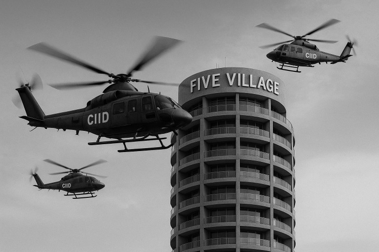
Согласно материалам, представленных Управлением по теоретическому надзору, а также на основании коллективных ощущений сотрудников отеля «Софитель» и непроверенного, но эмоционально убедительного отчёта из Telegram,
Постановляется:
Признать, что гражданка, именуемая в материалах как Королева, демонстрирует устойчивое уклонение от появления в точках, где её ожидают, что расценивается как психологическая аномалия уровня 3-Б («отказ от предсказуемости»).
Зафиксировать, что отсутствие Королевы в аэропорту в ответ на депортацию, и её отсутствие в суде в ответ на досудебную критику — является негласной формой сопротивления порядку через отсутствие.
Квалифицировать данное поведение как подрыв стабильности через абсентеизм с повышенной харизмой.
Постановить:
осуществить задержание Королевы в момент её самопроявления, независимо от канала: аэропорт, эфир, зеркальная поверхность или кондиционер.
при поимке — незамедлительно предъявить обвинение по статье 148/НЯ:
«Неявка Явно Важной Особы в Момент, Когда Это Было Эстетически Желательно».
Направить копию постановления в:
• Департамент Магической Наблюдаемости
• Комитет по Реакции на Аномалии Харизмы
• Отдел Культурных Паник
Довести постановление до сведения Королевы через поле. (Поскольку любая другая форма доставки будет проигнорирована в силу её опережающей интуиции).
Организовать немедленную оперативную фазу исполнения:
Вертолёты C.I.I.D. (Counter-Incarnation Intelligence Division) развёрнуты над районом Five Village, где, по неподтверждённым слухам, Королева может укрываться под видом топовой (в силу этажности) девушки сопровождения.
Все такси платформы Careem переведены в режим автоидентификации лица: в случае распознавания Королевы — маршрут корректируется автоматически с «аэропорт» на тюрьму Аль-Барша.
Исключения из протокола:
• Одежда в стиле «аля-Суфи»
• Маски, но не метафизические
Подпись:
Судья-Теоретик Anisr Fouad.
М.П. (магическая печать — приложена в виде мыслеформы)
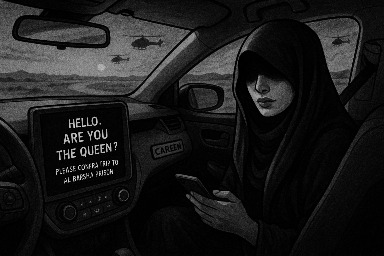
Сцена: Дубай. Ночь. Пустыня гудит за окном.
Такси Careem, модель «умная до занудства», скользит по шоссе. Внутри — пассажирка. Высокая, в тени капюшона, с выражением «я не обязана объяснять своё лицо».
ИИ такси активируется:
«Здравствуйте, уважаемая. Вы выглядите на 94.2% идентично искомой особе по приказу №017/ПА-23. Разрешите уточнить: вы — Королева?»
— Я — женщина, — отвечает пассажирка. — А ты — дурак.
«Женщина с уровнем харизмы выше среднего. Подозрительно.»
— Я просто устала. У меня губы пересохли.
«Зарегистрировано: использование губ как средство отвлечения. Рекомендуется маршрут: тюрьма Аль-Барша. Подтвердите поездку.»
— Я не туда еду, — отрезала она. — Мне в аэропорт.
«Согласно последнему постановлению, лица, приближающиеся к аэропорту, и не отрицающие свою Королевскость — подлежат немедленной коррекции маршрута.»
Пассажирка открывает окно. Ветер врывается в салон, и вместе с ним — шлейф запаха фиников, лжи и весёлого сюрреализма.
— А если я — не Королева?
«Тогда зачем вы так красиво молчите?»
— А если я — просто усталый ангел?
«Вы двигаетесь как ОПГ. Ваше молчание нестандартно. Ваш профиль — литературный. Ваше выражение лица — антигосударственное.»
Она достаёт телефон. Пишет «помощь», но не отправляет.
ИИ сообщает:
«Вы пытались вмешаться в маршрут. Это может быть классифицировано как побег. Вас уже ждут. Повторяю: подтвердите поездку в Аль-Баршу или предъявите доказательство отсутствия Королевства в вашей личности.»
Пауза. Пассажирка смотрит в зеркало. Видит своё отражение. Оно улыбается.
— Пусть будет Аль-Барша, — шепчет она. — Но пусть им будет страшно, когда дверь откроется.
Такси молчит. Навигатор дрожит. А дорога впереди — уже знает, кого она везёт.
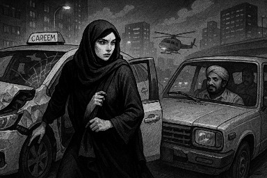
Предыдущая история: Королева — в умном такси Careem, ИИ в панике, маршрут — в Аль-Баршу. Но судьба, как известно, не любит алгоритмы.
На перекрёстке Аль-Васл и Шейх Заед роуд, перед такси внезапно выезжает грузовик с пакистанским экипажем. Никто не тормозит. Никто не уступает.
ИИ такси в панике орёт:
«НЕОПРЕДЕЛЁННОСТЬ! МУЛЬТИКУЛЬТУРНОЕ СТОЛКНОВЕНИЕ!»
Далее — бам, шипение, разлитый чай, и глубокая моральная пауза в эфире.
Королева открывает дверь. Её одежда — не мятая, а стратегически перекошенная. Пока ИИ считает убытки, к ней подъезжает машина марки «ещё дышит».
Внутри — Рашад. Индус. Не таксист по документам. Но в душе — всегда в пути.
— Садись, мадам. Я свободный человек. Камер нет, маршрута нет. Только Дух и дорога.
— В аэропорт, — говорит Королева.
Рашад делает знак, как будто благословляет коробку передач:
— В какой?
— DXB… но уже, видимо, поздно.
— Едем в Абу-Даби. Там ещё дышат фракталы. А здесь… всё как-то… следит.
Так начинается новая глава: путешествие на юг в машине вне системы. Рашад не спрашивает. Он чувствует. Он не включён в базу Careem, его маршрут — написан от руки на визитке, а магия поездки — в простом молчании.
Королева смотрит в окно. Позади — сирены, щёлкающие камеры, остатки системной логики. Впереди — трасса в Абу-Даби, где, может быть, её и ждёт новый рейс. А может — что-то большее, чем все рейсы сразу.
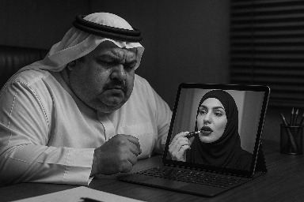
Место действия: офис Хамада. Освещение — холодное, как его душа. На столе — айпад, на экране — лицо губастой Лианы в режиме видеосвязи.
— Хамад, — говорит она, подправляя блеск. — Мы потеряли Королеву. ИИ из Careem только что скинул мне системный отчёт. Он... в шоке.
— Говори ясно, — бурчит Хамад. — Ты ж юрист, а не поэт.
— ДТП. Пакистанцы. Фронтальное. Королева… ушла. Села в тачку к некому Рашаду. Никаких камер. Навигатор — бумажный. Маршрут — Абу-Даби.
Хамад поднимает бровь. Его усы напряжённо замирают. Он делает один звонок. Будулай.
— Она ушла. На юг. Не по воздуху, а по асфальту.
— Где ИИ? — рычит Будулай. — Кто разрешил отпустить?
— Он... перегрелся. Записал в отчёт, что пассажирка «слишком элегантна для тюрьмы». Теперь он требует обновления прошивки и сеанс психотерапии.
Будулай не смеётся. Никогда. Он просто звонит дальше — аль-Мактуму.
— Бежит. Абу-Даби. Мы дали слабину. Королева вне поля. Говорит с дорогой. У неё опять началась... поэзия.
Аль-Мактум тяжело дышит:
— Немедленно. Приказ №017/ПА-23 активен. Передай в аэропорт Абу-Даби: Все ворота — под контроль. Все женщины с уровнем харизмы выше 78% — на допрос. Все билеты на Бангкок — отменить.
Тем временем, Лиана отправляет в чат: «Королева в движении. ИИ говорит, она улыбалась, когда исчезала.»
А в аэропорту Абу-Даби в срочном порядке вводится протокол: «Лепестковый захват: мягко, но по полной.»
И пока они ставят заграждения, Королева — в машине Рашада — успела уже заснуть. Потому что настоящий побег — это когда тебя не просто не поймали. А когда все уже знают, что ты ушла. И всё равно — опаздывают.
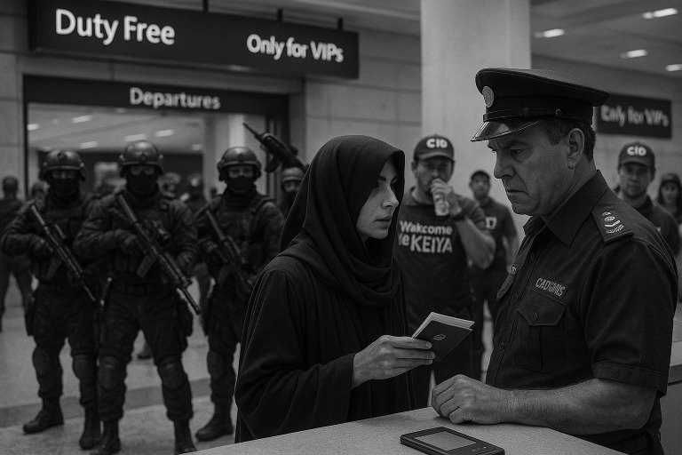
Аэропорт Абу-Даби. Терминал B. 04:26 утра. Воздух прохладный, как уставший компрессор, но напряжение — густое.
Где-то между зоной Duty Free и пунктом «Only for VIPs» началась операция. Солдаты в полной экипировке — шлемы, броня, перчатки, непонятный блеск в глазах, словно кто-то пообещал им бонус за поимку легенды. Они стоят грудой на входе в сектор вылета, с видом «мы в отпуске, просто с пулемётом».
Во внутреннем секторе — таможенники. Носы как у бульдогов, форма как у диктатора средней степени зрелости. Они что-то ищут. Не оружие. Не наркотики. Они ищут стиль. Харизму. Неповиновение в походке.
И тут — они. СИАЙДИ. «Туристы» в кепках, купленных на распродаже африканского стереотипа, в футболках с надписью «Welcome to Kenya» и странной жестикуляцией. Они пьют воду так, будто только научились держать бутылку. Но под их рубашками — петлички, и у всех — одна цель: «Выйти на Королеву, если она появится, как появление смысла в пустом ангаре.»
Служба объявлений молчит. Рейсы задерживаются. Пассажиры нервничают. А где-то в тени — она. В капюшоне, с билетом, с документами.
— Мадам, ваши документы, — говорит таможенник, не поднимая глаз, но уже нажимая кнопку под столом.
— Вот, — отвечает она. — Всё в порядке.
— Именно это и пугает, — бормочет он. — Вы слишком… в порядке.
В этот момент всё активируется. Солдаты двигаются. СИАЙДИ натягивают очки. Таможенники встают. Система дрожит.
— ВЫ — КОРОЛЕВА! — кричит кто-то. — ИМЕНЕМ ПРИКАЗА №017/ПА-23!
— Я — транзит, — отвечает она.
Но её уже окружают. Пять, десять, двадцать человек. Крики, команды, шаги, и один голос над этим всем:
«НЕ ДАЙТЕ ЕЙ УЛЕТЕТЬ!»
Она медленно поворачивает голову.
— Я уже улетела. Вы — просто догоняете след.
И пока они бросаются с наручниками, в стороне открывается другая дверь — техническая, и тихий голос Рашада говорит:
— Я знал, что ты вернёшься. Поехали.
Солдаты в панике. СИАЙДИ сверяются с распечатками. Кепки сбиты. А терминал — вновь пуст. И только запах духов — остаётся, как пощёчина на системе.
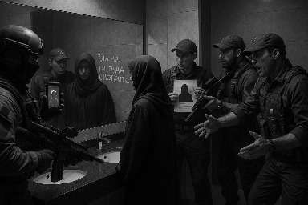
Пока система перезапускала протоколы по задержанию, один из младших оперативников СИАЙДИ заметил движение в зеркале. В женском бизнес-зале — туалет с полированной плиткой, в которой отражения вели себя немного… не так.
На камере — зафиксировано: женская фигура вошла. Не вышла. Но следом из кабинки вышла другая. В другой одежде. С другим лицом.
— Это она! — прошипел кто-то. — Она перетекла в зеркало!
В туалет ворвались шестеро. Двое — с портативным сканером DRI (Detecting Residual Identity). Один — с распечаткой ауры.
— Где она?!
Зеркала молчали. Из кабинки — только запах духов и короткая надпись помадой: «Вы не туда смотрите.»
— Она перешла на другой уровень! — закричал кто-то.
— В смысле терминал?
— Нет! В смысле восприятия!
Система снова зависла. Рашад ехал по тоннелю технической логистики. Без света. Без GPS. Без страховки. Но с уверенностью: «Ты не сбежала. Ты просто вышла в другом месте.»
В зале экстренного совета Служб Подавления — аль-Мактум в гневе.
— Где она?! — рычит он. — Почему снова ушла?
Будулай виновато опускает глаза:
— Ваше высочество... СИАЙДИ вышли в кепках. Они… пахли. И не как элита.
— Пахли?! — взрывается шейх. — Мы потеряли Королеву из-за вонючих кепок?!
— И душа, возможно, не было, — добавляет кто-то из штаба.
— Позор! — кричит аль-Мактум. — Все вон с глаз. Немедленно!
Тем временем — в самолёте рейса Абу-Даби — Москва на последнем ряду у окна сидит женщина в капюшоне. А под ней — только система, которая снова опоздала на взлёт.
В подземном штабе СИАЙДИ творился переполох. На столах — мятые распечатки с лицами, которые «возможно — она». На экране — фрагмент с камеры в туалете: «Женская фигура, отражение — самостоятельное, запах духов — архивный.»
И тут врывается Будулай.
— Всё, — говорит он. — Провалено.
— Почему?! — ревёт командир СИАЙДИ.
— Кепки. Ваши люди были в вонючих, дешёвых кепках. Вы не могли распознать Королеву, потому что она просто не стала к вам подходить.
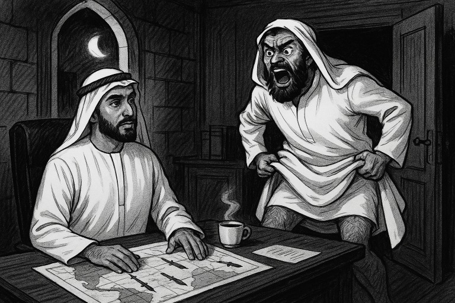
Дворец аль-Мактума. Кабинет. Ночь. Листы с ракетными маршрутами дрожат под пальцами. В воздухе — смесь тонера, кофе и горящей репутации.
Дверь распахивается.
— Где, где они?! Где эти чертовы СКРИЖАЛИ?! — визжит Будулай, влетая в кабинет и, по привычке, задирая гандуру выше пояса.
аль-Мактум даже не вздрогнул. Он просто поднял взгляд от карты с пронзившими Израиль ракетами и сказал:
— Тихо, тихо… Какие ещё скрижали, Будулай? У нас тут… ПВО умерло, если ты не заметил.
— Скрижали! — визжал Будулай. — Она… она САМА сказала, что всё вращается вокруг них!
— Кто она?
— КОРОЛЕВА!
аль-Мактум печально глянул на потолок, будто ждал оттуда логического объяснения. Не пришло.
— Она говорила, что скрижали… у неё. Но она побоялась везти их через таможню. Из-за ваших «гениальных» законов о колдовстве! Теперь они здесь. В Эмиратах. Где-то.
аль-Мактум потер лоб.
— Ты хочешь, чтобы я что? Пошёл в Duty Free искать ковчег?
— Где Биша?! — резко сменил тему Будулай. — Только он может найти! Он же чувствует камень, он однажды по запаху палёной ваты нашёл текст пророчества в унитазе!
аль-Мактум устало вздохнул:
— Хорошо. Зови Бишу. Пусть ищет. Пусть вынюхивает. Пусть стучит по полу. Если надо — пусть находит вход в другое измерение под фудкортом в Dubai Mall.
Будулай выскочил так же внезапно, как влетел. И уже через час Биша сидел в медитации посреди терминала, водя пальцем по плитке и бормоча:
— Скрижали шепчут. Они близко. Под слоем лжи, под дренажной трубой, в ящике, где хранили отчёты СИАЙДИ…
Аль-Мактум открыл ещё одну папку. На ней было написано: «План по сдерживанию Королевы (нерабочий, часть 11)». И внизу приписка:
«Если найдены скрижали — отменить всё и немедленно притвориться, что мы всегда верили в чудеса.»
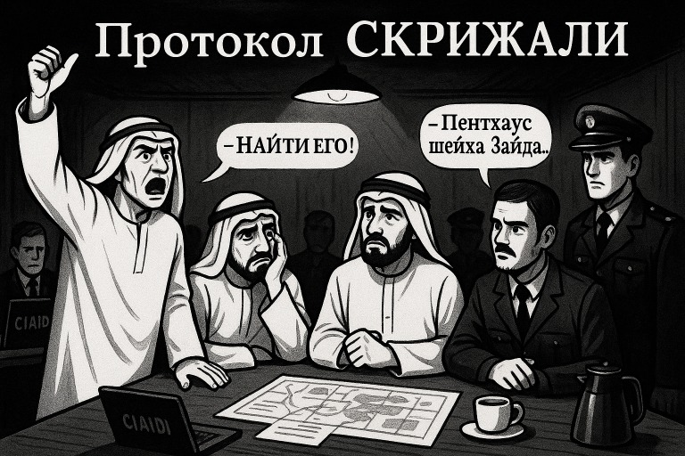
05:14. Экстренный сбор в бункере аль-Мактума.
Повестка: СКРИЖАЛИ.
Присутствуют: аль-Мактум, Будулай, Биша, СИАЙДИ, полиция, армия, и кофе, который никто не пьёт.
— Слушаю вас, — сказал шейх, тяжело глядя на потолок, как будто там висел смысл.
СИАЙДИ докладывают:
— С помощью арабского ИИ «FalconQuant v3.9», мы проанализировали поведенческие паттерны Королевы. Она многократно покупала ракушки в «Марина Молл», Абу-Даби.
— Раку… что? — хмыкнул Будулай.
— Ракушки. Разные. И… всегда только по нечётным дням. Это магический ритм!
аль-Мактум на мгновение оживился:
— Это уже похоже на религию.
Полиция докладывает:
— В результате серии допросов (преимущественно подозрительных пакистанцев на стройке), мы выяснили: Королева давно не пользуется Careem. Она ездит с неким Рашадом.
— Такси?
— Не такси. Он просто... ездит. Везде.
Будулай врезается в разговор:
— НАЙТИ ЕГО!
СИАЙДИ:
— Предполагаемое местонахождение скрижалей — один из пентхаусов шейха Зайда.
— На каком? — спрашивает аль-Мактум.
Молчание. Потом кто-то сзади выдает:
— На одном из тех… которые официально не числятся.
— Простите?
— В системе регистрации недвижимости — баг. Древний. С тех времён, когда арабский реестр перешили на SAP через Excel и луну.
Биша стонет:
— Это же оно… «невидимое жилище» — классический контейнер для скрижалей!
Будулай бегает по кругу:
— Если скрижали там… И Рашад — хранитель… А Королева — уже вне доступа…
— То мы в жопе, — говорит кто-то, неосмотрительно вслух.
Аль-Мактум сжимает виски:
— Объявляю Протокол СКРИЖАЛИ.
• Перепроверить все объекты с нулевым кадастром.
• Опросить каждого Рашада в радиусе 300 km.
• Отменить все вылеты на Шри-Ланку.
• Бише — отдельный отсек и ковёр.
Собрание в панике. А где-то между этажами шейха Зайда, пентхаус дышит, как будто знает, что его давно нет — но он всё равно охраняет.
Сцена: Дубай, отель «Sofitel The Palm». Лобби пропитано запахом кофе, тревоги и кондиционированного фатализма. На ресепшене — будто ничего не происходит, но даже растения смотрят настороженно.
По слухам, именно здесь Королева часто появлялась. Как буря. Как предвестник. Как женщина, от которой светильники трещали, а официанты запинались на слове «мисс».
аль-Мактум, стремясь не выглядеть идиотом перед остальными шейхами, даёт новый приказ:
— Прекратить хаотичное обыскивание пентхаусов шейха Зайда. Узнать всё о Рашаде. Начать с «Софителя».
СИАЙДИ выдвигаются. Список: весь персонал, весь архив, весь персональный состав шезлонгов.
Официант Бахтияр. Местный. Замкнутый. Вечно уставший. Но в глазах — след ночей, когда кто-то приходил с другого уровня бытия.
СИАЙДИ берут его в кабинет. Он держится ровно 6 минут 40 секунд.
— Она… приходила, — шепчет он. — Я её видел. Я наливал…
— Наливал что?
— Ну… коктейли. И… кое-что ещё.
Тишина.
— Продолжай.
Бахтияр глотает слюну:
— Несколько раз… я… я подливал яд.
— Яд?!
— Да. Очень редкий. Почти нераспознаваемый. Тетродотоксин. Рыбный. Говорили, будет тихо. Без боли. Сказали — «она уже перегорела, это просто финал.»
Пауза. Офицеры переглядываются.
— Кто дал приказ?
Бахтияр смотрит в пол:
— Я не знаю. Но был человек в чёрном с нашивкой…
Он не договаривает. Но один из СИАЙДИ уже шепчет:
— Это Будулай.
— Почему вы молчали?
— Потому что… потом приходил Тамар. Он ничего не спрашивал. Просто оставлял статуэтку мумии на подносе. Смотрел в глаза. И говорил: «Она должна пережить яд. Как все древние.»
— Кто такой Тамар?
— Менеджер. Египтянин. Помешан на мумиях. Русские туристы ищут девушку по имени «Тамара», а находят его. Он улыбается и говорит по-русски лучше, чем они.
— Где он сейчас?
— Наверху. В служебном архиве. Говорит, там покой фараонов.
Сцена замирает. Бахтияр ссутулен.
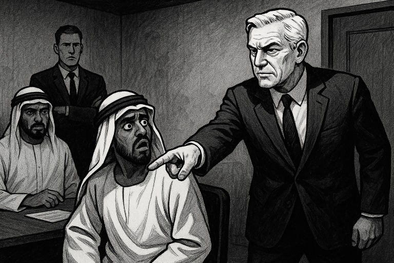
Бахтияр дрожит. Свет моргает. На столе — пустой стакан и включённый диктофон. СИАЙДИ молча курят, хотя в помещении написано «NO SMOKING».
— Я не знаю больше ничего! — визжит Бахтияр.
— Ты говорил о Тамаре.
— Тамар… Тамар знает. Он говорил с мумиями. Он… он был связующим.
— Где он?
— В номере. Софитель. Обычно с кем-то. Иногда — с… англичанином.
Номер 429, Sofitel Dubai The Palm
Дверь распахивается. Полиция и СИАЙДИ врываются с криком:
— НЕ ДВИГАЙСЯ!
На кровати — голый англичанин, по-британски вежливо прикрытый меню обслуживания. Тамар, в халате с вышивкой «Cleopatra Suite», приподнимает руки и кричит:
— Я НИ ПРИ ЧЁМ! Я только показывал, как работает унитаз! Там 4 режима подачи воды и ароматизация! Он был в шоке, я пытался помочь!
— Одевайся. Ты идёшь с нами.
СИАЙДИ. Комната допроса.
Угроза витает в воздухе. Один из офицеров намекает на статью за мужеложество. Тамар, побледнев, сдаёт.
— Это не я… это… распоряжение пришло сверху. Сказали — «дать её то, от чего не просыпаются. Яд.»
— Кто дал приказ?
— Владелец отеля.
Все замирают.
— Как его имя?
Тамар достаёт визитку. «Alain D. Wanzenberg» — представитель Katara Hospitality, управляющей Sofitel Dubai The Palm.
— Позовите его.
В комнату входит Ален Ванзенберг. Сухой костюм, спокойный голос.
Офицер СИАЙДИ наклоняется:
— Господин Ванзенберг. Мы получили показания, что именно вы дали распоряжение отравить Королеву.
— Это бред, — спокойно отвечает он. — Я…
Но затем… Пауза. Долгая. Он медленно поднимает руку. И — указывает пальцем. Прямо на Будулая.
Будулай замирает. Гандура теряет форму.
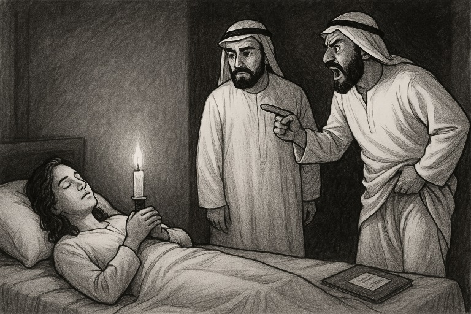
Место действия: Дворцовая тюрьма Аль-Мактума. Подземный уровень. Вентиляция шепчет молитвы, а стены напитаны исповедями тех, кто раньше считал себя неприкасаемым.
В камере допроса: Будулай, Биша, Аль-Мактум и Верховный представитель Дубайского СИАЙДИ. Атмосфера — раскалённая, как чайник на верблюжьем костре.
Аль-Мактум молчит, глядя на обоих. СИАЙДИ открывает досье.
Первым говорит Будулай:
— Это не я! Это Биша! Он говорил, что хочет «сделать её счастливой». Что у него есть древняя техника…
— Техника? — перебивает Аль-Мактум.
Биша кивает, заикаясь:
— Да… да… Метод гипоксии мозга при параличе от тетродотоксина. Он… избавляет от демонов… Это… временное… духовное очищение!
— ОЧИЩЕНИЕ?! — рявкает Аль-Мактум.
Биша резко машет руками:
— Я ТОЛЬКО ОДИН РАЗ! Я дал дозу… и тут… начался ливень.
— Ливень?
— Да! Ужасный! С водой по капот! Песок уплыл, машины поплыли, Дубай чуть не смыло в море!
Будулай вмешивается:
— Всё из-за того, что она связана с Люцифером. Мы… мы просто хотели выдать её замуж!
— Замуж?
— Да! Чтобы остановить фрактальную магию. Чтобы она не устраивала свои прорывы восприятия и портальные резонансы!
— Вы знали, что она ведьма? — спрашивает Аль-Мактум.
Оба в панике:
— Да! Знали…
— Тогда зачем яд?
— Чтобы избежать открытого убийства, о великий шейх! — стонет Биша. — Мы хотели воздействовать мягко! Отключить сознание!
— Когда это было?
— 15 апреля 2024 года.
Тишина. Аль-Мактум неожиданно мягко произносит:
— Хайя…
Комната замирает. Имя сбежавшей жены повисает в воздухе, как запрещённая тень прошлого.
Будулай скуля:
— Мы… мы просто хотели по-тихому устранить проблему, о великий Аль-Мактум. Но она… она не уходила. Она присылала видео. С недопустимым поведением.
Биша кивает:
— Да. И… кажется… кажется, она даже кайфовала от яда. Он не ломал её. Он делал её сильнее…
Аль-Мактум встаёт. Он глядит на потолок, будто рассчитывает шквал.
— Вы оба не поняли. Она не «проблема». Она — перепрошивка!
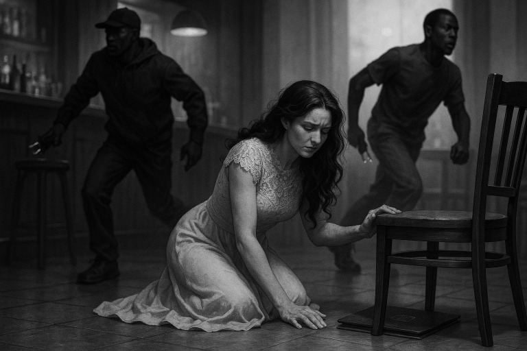
Место действия: дворцовая тюрьма. Комната допроса. На стене — герб ОАЭ, над головой Аль-Мактума — жара гнева. Будулай дрожит, как треснувший кальян.
Аль-Мактум вышагивает по комнате:
— Говори. С самого начала. КАК ты вообще узнал о Королеве? ОТКУДА контакт?
Будулай вжимается в спинку стула:
— Я… мне… ко мне обратился… Архангел. Он просил помочь разобраться с тем нападением на его сотрудницу в Five Village.
— Кто? — прищурился Мактум.
— Архангел. Он так его называет Королева. Мужчина. Представился — Михаил. Из Керв Финанс.
Аль-Мактум замирает:
— Михаил… из Керв Финанс… А у тебя какие дела с Архангелом?
Будулай почти шепчет:
— Я… я только хотел… прокачать свой банк. С их средствами. С деньгами Керв Финанс. Я думал… что эта Королева… просто сотрудница Михаила.
Аль-Мактум поднимает бровь:
— И ты решил… взять её в жёны?
— Чтобы… чтобы… прокачать банк…
Молчание в комнате настолько плотное, что его можно разливать в хрустальные бокалы.
— Так… так, — медленно говорит Мактум. — А кто на неё напал?
Будулай заикается:
— Был… заказ. Из… России. Точно не знаем, но… звучали имена: — Борисыч, Позор Адама и какие-то… чеченцы.
— Имя.
— Исмаил.
— Кто исполнял?
— Команда негров. Во главе… Дагестанец. Имя… Абулмаксим. Он руководил группой. С электрошокерами. В отеле Five Village. Прямо в номере.
— Архангел тогда и обратился ко мне… сказал: “Помоги Королеве. Ты же человек в системе.”
Мактум опускается на стул. Лицо каменное.
— Значит, ты… решил пожениться на ведьме-пророке… ради денег… на которую напали… по заказу русских, чеченцев и какого-то Абулмаксима… а Архангел… просил спасти.
Будулай медленно кивает. Аль-Мактум устало моргает:
— Это уже даже не политика. Это уже метафизический фарс.
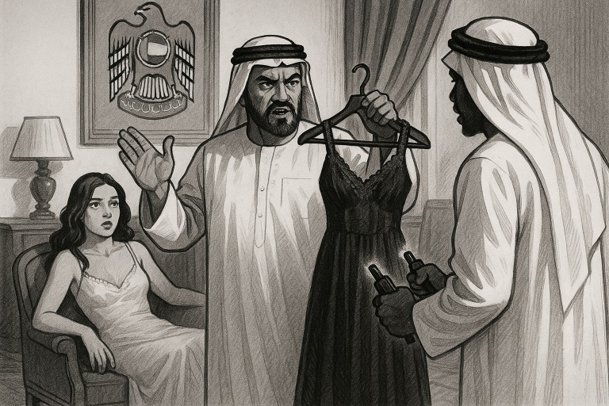
Аль-Мактум ходит кругами:
— СКРИЖАЛИ! Ты всё ещё не нашёл их! Значит, ищи как хочешь! Начни с неё. С этой… Королевы.
— Да, повелитель.
— Свяжись с русскими. Пусть твои СИАЙДИ аккуратно закинут запрос — кто она такая.
Будулай уходит, хлопает в ладони — команда СИАЙДИ активируется.
Через три часа — ответ. Тихий. Сухой. И ужасный.
— Повелитель… есть… проблема.
— Опять?! — вскидывается Мактум.
— Мы… не можем официально запрашивать.
— ПОЧЕМУ?!
— Потому что… Консульство РФ уже отслеживает её дело.
Мактум замирает.
— …какое ещё дело?
Будулай молчит. Потом — шёпотом:
— Судимость.
— КАКАЯ. СУДИМОСТЬ?
— После… после неудачных попыток отравить её, я… я инициировал… трэвл бан.
— На каком основании?
— Мы… мы опоили её. Задержали. Подали в розыск… Завели дело…
— По какой статье?!
— Якобы… напала на англичанина. В голом виде.
— ГОЛАЯ?!
— Технически… возможно. Но на самом деле… голый был англичанин.
— Что?!
— Всё произошло в «Sofitel The Palm». Она теряла сознание. Тамар держал её. Англичанин был… рядом. Кто порвал её платье — Тамар или англичанин — неизвестно. Но в протоколе написали, что она явно была без одежды.
Аль-Мактум опускается в кресло. Смотрит в точку.
— То есть ты… после неудачного убийства… обвинил пророка в нападении в голом виде… и теперь Россия не даёт нам официального хода…
Будулай почти падает на колени:
— Я… хотел ограничить её перемещения… Я… не знал, что она начнёт отправлять видео из разных точек мира.
Мактум вздыхает:
— Найди мне этого англичанина. И Тамара. И… верни мне платье.
Будулай в панике кивает. А СИАЙДИ уже открывают новый файл: «Операция: Платье как улики нет, но травма осталась.»
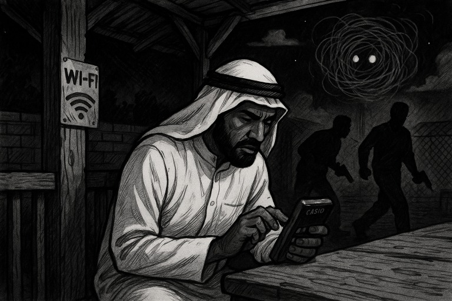
Место действия: задний двор дворцовой тюрьмы. Будулай в одиночестве, в обшарпанной беседке с Wi-Fi, подключён к теневому каналу связи через «блатную» симку, вставленную в калькулятор Casio.
Он пишет: «Срочно. Кто такая Королева. Подробности. Без офиц. каналов.»
Запрос уходит. И — как это бывает с вещами, связанными с ней, — улетает не туда, куда планировалось.
Место действия: Россия. Где-то между архивом СИН, пыльным принтером МВД и чатом «Оперативный буфет».
Сначала запрос видит Борисыч. Он, как всегда, жует пирожок и подозревает подвох:
— Снова она?..
Через две минуты — Позор Адама. Он орёт в трубку:
— Это заговор! Она мстит! Она вернулась через VPN!
А ещё через 40 секунд — братья Сельницыны. Те самые, кто однажды потеряли три кейса улик, пытаясь сфотографировать себя на фоне них.
— Это по ней запрос! — говорит Сельницын-младший.
Старший — уже звонит Главкому. А Главком… по привычке пингуется Вахрамееву.
Место действия: Лубянка. Настороженность. Сотрудники ФСБ смотрят на экран. Там — всего два слова: «Снова она???»
— Что на этот раз?..
— Откуда пришёл сигнал?..
— Кто послал?..
Ответов нет. Но воздух сгустился. Один из аналитиков шепчет:
— У неё, говорят, фрактальность подтверждена.
— Документально?
— Эмпирически. У кого был контакт — у того потом зеркала ведут себя странно.
Место действия: дворцовая беседка. Будулай получает ответ через зашифрованный канал:
«Подтверждение неполное. Официально — неизвестна. Неофициально — фрактальная. Клубки. Эффекты. ФСБ жалуются на зеркала.»
Будулай бледнеет. В небе загорается странная тень. Он шепчет:
— Она… не просто жива. Она… уже во взаимодействии.
Он закрывает канал. Смотрит в точку.
— Надо задушить клубок, пока не стало петлёй.
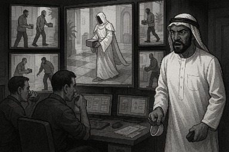
Место действия: штаб СИАЙДИ. Комната наблюдения, залитая светом от множества экранов. Оперативники в смятении, Будулай нервно пьёт воду из колпачка.
— Господин Будулай, мы… поймали трёх Рашадов.
— Ну?.. — сухо.
— Первый — пакистанец. Ничего не помнит, кроме своей свадьбы и шести куриц.
— Второй — бангладешец. Вообще не говорит на английском. Или делает вид. На любой вопрос отвечает «Мир вам и соль в рот».
— Третий — почти подошёл. Готов был сознаться во всём. Но… он был чернокожим. И, как выяснилось… не умел водить. Даже велосипед.
Будулай швыряет колпачок:
— ЧТО ЗА ЦИРК?!
СИАЙДИ включает запись с камеры вестибюля Sofitel The Palm. Трое мужчин — разных комплекций, все — в разное время доставляют коробочки. Они не говорят. Они не ждут. Они просто ставят коробочки — и уходят.
Через несколько минут в кадре появляется фигура. Высокая. Лёгкая походка. Одежда — словно из театральной постановки об Архангелах. Без лица. Без шума. Забирает коробочку — исчезает в лифте.
— Кто это?.. — шепчет аналитик. — Почему никто ничего не сказал? — Где охрана?
Будулай в бешенстве:
— Тамару. Сюда. Немедленно.
Через час.
Тамар сидит за столом. Смотрит прямо, с лицом египетской маски.
— Ты видел это? — спрашивает СИАЙДИ.
— Я вижу многое, но не всегда сразу осознаю. Иногда коробочки — не коробочки. Иногда — реликвии.
— Кто был в одежде ангела?
Тамар слегка улыбается:
— Архив не раскрывает имена. Только узоры.
Будулай чуть не кидается на него:
— ЭТО БЫЛА ОНА?!
— Это была фрактальная фигура. Которая умела забирать вещи, не нарушая пространства.
Пауза.
Будулай смотрит в камеру:
— А коробки?! Что в них?
— Внутри были… разные вещи. Никогда не совпадали. Один раз — светящийся камень. Другой — шёлковая ткань. Один раз — просто один лист бумаги с числом 108.
Комната замирает. Будулай отходит к стене. Смотрит в никуда.
— Мы… не просто ищем Рашада. Мы уже… в коробке.
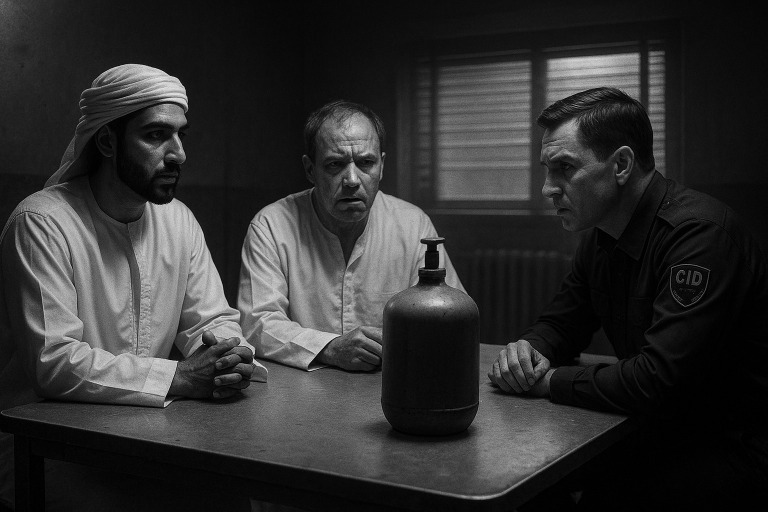
Место действия: всё та же допросная. Тамар сидит в полумраке. За окном уже третий раз рассвело, но никто не отпускает египтянина, который знает слишком много и говорит слишком красиво.
СИАЙДИ включают новую запись. Будулай сидит тише кондиционера, а в комнате — напряжение, как перед ураганом в серверной.
— Тамар. Ты говорил, что видел странное. Мы хотим знать всё. Без метафор. Желательно.
Тамар улыбается, как будто это просьба сфотографировать фараона в халате.
— По ночам… из номера Королевы раздавалось… шипение. И не простое, а… техно-мистическое. Оно… как будто шло изнутри стен. Иногда — духи умерших транзисторов бродили по этажу. Один техник сказал, что слышал, как чайник шептал на языке BIOS.
Будулай побледнел:
— Это… это же…
— Да, — кивнул Тамар. — После её отъезда, в комнате находили баллоны. Пустые.
Будулай судорожно прошептал:
— ВОЗДУХ…
В комнате замерло всё. Даже кондиционер затаил поток.
Один из СИАЙДИ, бледнея, сказал вслух:
— СКРИЖАЛИ. Она делала СКРИЖАЛИ прямо в номере!
— Мы… мы думаем, что это лаборатория в развёрнутом виде.
Тамар кивает:
— Когда она уехала, мы подумали, что всё закончилось. Но… пустые баллоны начали появляться в других местах.
— В каких?
— В квартирах. В отелях. Мы подключили проверку Airbnb.
На экране появляются адреса. Спальни. Кухни. Пентхаусы. Везде — отзывы странных людей о «мягком сиянии» и «снах с кодом».
СИАЙДИ докладывают:
— Во всех этих местах жила Королева. Иногда — под именем Жанна. Иногда — вообще без имени.
Будулай вскакивает:
— Она… она делает СКРИЖАЛИ в каждой точке. Она размножается. Она превращает город в мозг.
СИАЙДИ молча запускают протокол: «Анализ содержания газа. Подозрение на фрактальный след.»
Но в уголке экрана уже появляется следующее сообщение:
«Новое бронирование: Жанна. Район — Al Barsha. Пожелания: Тишина. Балкон.»
Место действия: Лубянка. Архив. Глубокий, пыльный, с запахом старой бумажной тревоги.
Будулай запросом шевельнул систему, и что-то проснулось. ФСБ получают сигнал: в тумбочке (буквально, в тумбочке) найден документ без штампа прочтения.
Открывают. Читают.
Отчёт.
Автор: Антон. Позывной — Позор Адама.
Объект: Усадьба
Локация: удерживается под контролем группы, во главе которой находится женщина, которую все называют «Королевой».
Причины такого именования: не ясны.
Маркиз — в состоянии хронического раздражения. Не признаёт её власть вслух, но идти на прямой бунт не решается. Поставки ВОЗДУХА не прекращаются. Что именно они вдыхают — не всегда идентифицируемо. Недавно наблюдался случай с неким раствором, краснеющим при смешивании. Говорят, это коллоидное золото.
Финансовый источник группы не установлен. Деньги появляются. По воле. Или по мане.
Поведенческая обстановка — нестабильная:
Лично у меня — головокружение. Иногда — неконтролируемая тяга к барабану. Иногда — лозунги. Громкие. Без повода.
Заключение:
Система внутри усадьбы напоминает вирусный театр, где сюжет рождается быстрее, чем поступают инструкции.
Приложение:
ни один рыцарь не подчиняется расписанию. Всё происходит по фрактальной логике.
Подпись:
Антон Адама.
(с последнего времени — предпочитаю не подписываться)
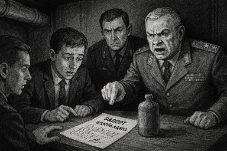
Место действия: Лубянка. Секретный зал №6. Там, где уходит вентиляция — туда, где не возвращается. На столе — распечатка рапорта Позора Адама.
В зале — генерал Перхов, полковник Захаров, аналитик Громов, и два сержанта, которые делают вид, что всё понимают, но боятся уже третьей страницы.
— Это что, блядь, за… оперетта? — шепчет Захаров.
Громов, дрожащими пальцами листая:
— Это… документ. Без визы. Ушёл в тумбочку. Был нерасшифрован.
— Сколько лежал?
— Два года.
Перхов вскидывает бровь:
— Автор кто?
Gромов мямлит:
— Антон. Агент.
Перхов морщится:
— Ах да… этот… Позор Адама.
Тишина.
— Вы сказали «Позор Адама»? — косится Захаров.
Перхов (кашляя):
— Простите. Оговорился. Антон. Агент Антон. Конечно…
Gромов продолжает:
— Он писал из усадьбы. Упоминается Королева. Маркиз. ВОЗДУХ. Коллоидное золото. Гиперлогика поведения.
— Ага. И «сир Санчес кувалдой разносит имущество».
— И «Поруччик теряет совесть».
— Что за хрень он нам прислал? Сказку?
Генерал Перхов встаёт. Лицо каменное:
— Это не сказка. Это протокол фрактального заражения.
Gромов тихо:
— У нас… случались эффекты. После чтения — двоение экрана, самовоспроизводящиеся файлы, и одна клавиатура начала печатать слово «СКРИЖАЛИ» без касаний.
Перхов ударяет кулаком:
— Хватит. Звать Антона.
— Вы уверены? Он же… — осторожно Захаров.
Перхов зло:
— Да. Позора Адама. Хотя бы он видел Королеву вживую.
Все переглядываются. СИГНАЛ УХОДИТ.
Вскоре по каналу связи приходит ответ:
«Антон в дороге. У него головокружение. И ритмическая тяга к барабану. Запрашивает: можно ли взять с собой фенибут и кувалду — на всякий случай.»
Перхов:
— Пусть берёт. Если она вернулась — нам уже нужны не отчёты. А обряды подавления.
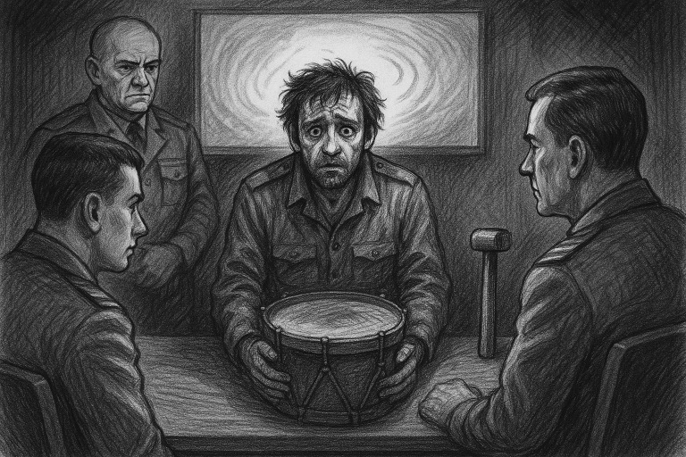
Место действия: Лубянка. Зал наблюдений.
В помещение входит человек в форме, но с лицом человека, который видел слишком много тумана и не уверен, был ли он в Дубае или в аду.
— Агент Антон, — произносит Gромов официально.
— Позор Адама! — выкрикивает сержант невпопад.
Пауза. Перхов морщится:
— Антон. Просто Антон.
Антон кивает, но взгляд у него затуманен. Он оглядывается, будто ждёт звук — и он раздаётся. Барабан. Тихая дробь. Неритмичная. Изнутри.
— У вас… всё в порядке? — спрашивает Захаров.
Антон шепчет:
— Я… я слышу… дробь. Голова… как будто переключается. В глазах… стол. Стол в усадьбе.
— Вы видели Королеву?
— Она… она… Она… я к ней, а она…
— Что «она»?
Антон хватается за голову:
— Не помню. Был за столом. Была… тишина. А потом… знак. На столе. Знак.
— Какой знак?
— Она сказала… там написано… Воланд. Буквы… одна на другую… везде огонь…
Перхов переглядывается с Gромовым:
— Это отсылка? К Воланду?
Gромов шепчет:
— Или к чему-то хуже.
Антон качает головой:
— Трон. Она сидит. Проповедует. Кому-то. Фенибуту.
— Кому?
— Его… его вроде Костя звали. Но теперь… Фенибут. Глаза у него квадратные. Таблетки жрёт пачками.
Антон вскакивает:
— Дубай… был в Дубае. Отпуск… Но что-то жарко… Будулай… Будулай… При чём здесь Будулай?!
Молчание. Потом он садится. Достаёт из кармана кувалду игрушечного размера. Ставит перед собой.
— Я взял. На всякий случай.
Перхов поворачивается к остальным:
— Он сломан. Но он видел.
В комнате снова начинается барабан. Но теперь его слышат все.
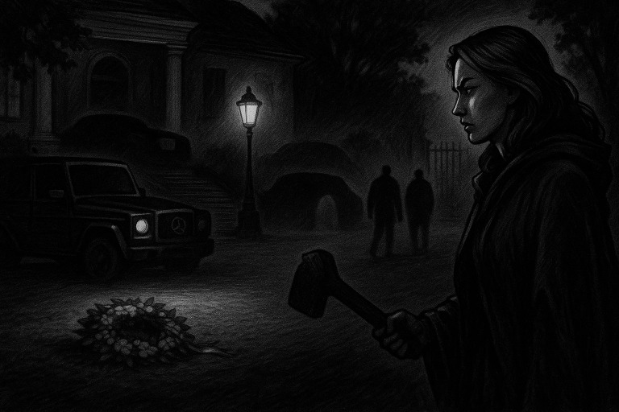
Место действия: Лубянка. Центр аналитики. Заседание комиссии по аномальным воздействиям на агентурный состав.
На повестке: Антон. Позывной — «Позор Адама».
Полковник Захаров листает распечатки:
— После его возвращения с допроса… У него барабан. У него фразовая петля. Он не отличает Дубай от Мастера и Маргариты.
Генерал Перхов кивает:
— Это значит, что в Дубае было воздействие. И, судя по всему, Будулай к этому причастен.
— Кто такой Будулай? — спрашивает аналитик Громов.
— Ведутся проверки. Он… как будто есть, но нигде не числится.
— А связь с Королевой?
— Только через показания Антона. Но они…
Перхов тяжело вздыхает:
— Продолжим допрос.
Камера допроса.
Антон сидит. Потеет. Пальцы стучат по воображаемому барабану.
— Антон, мы хотим знать: что произошло в Дубае?
Антон моргает:
— Всё началось… с тех рамсов с Сельнициными… Я… не помню…
— Конкретней.
— Роллс-ройс. Гелики с венками. Королева в ярости… Потом раз — и мы все на усадьбе. А братанов уже нет. Кажется… их посадили.
ФСБ переглядываются.
— Кто посадил?
— Не знаю… Борисыч что-то выяснял. Главком. ОМОНовцы. Всё перепуталось.
Антон:
— Где связь? Где? Кто я? Почему меня мучают?!
— Антон, чьи приказы ты выполнял?
Антон бьёт кулаком по столу:
— БОРИСЫЧА!
Тишина.
Перхов стучит ручкой:
— Значит, у нас теперь след Борисыча.
Громов вписывает новую строку в досье:
«Объект ‘Борисыч’ — проверить связи с Дубаем, Сельнициными, ОМОНом и феноменом ‘Королева’.»
А Антон в углу шепчет:
— Я только выполнял приказы…
И снова — барабан.
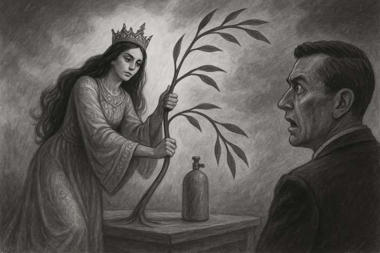
Место действия: Центр разведанализа ФСБ.
Доклад поступает срочным пакетом. Пометка: «Режим особого допуска. СЕЛЬНИЦЫН».
Генерал Перхов читает вслух:
«В МВД Российской Федерации введён ПРОТОКОЛ ГОЛОСОВОГО КАРАНТИНА. Повод — инцидент с Андреем Сельницыным.»
«По неофициальной линии, Андрей сообщил: его брат, Дмитрий Сельницын, однажды, оформляя документ с Королевой, перепутал местами слова. Или, по словам Андрея — ‘что-то случилось.’»
«Этот документ и стал ключом к уголовному делу по 159-й статье. В отношении самих Сельницыных.»
«Андрей признаёт: ‘Да, был развод. План был блестящий.’»
У Королевы не было шанса. Всё было выстроено идеально.
Но… она как-то повлияла. Как будто подстроила всё через брата. Хотя не знала о плане заранее.
«Она говорила про какого-то Папу. Говорила: ‘Папа — его имя все знают, но боятся произносить.’ Это звучало как бред. Мы смеялись за спиной.»
«Но теперь… Теперь вот не смешно.»
С тех пор Андрей передаёт только голосовые сообщения, боясь писать любой текст.
Показания не завершены. У Андрея — галлюцинации при попытке вспомнить ключевые моменты.
Голосовые команды в МВД перекодированы. Активирован протокол блокировки распознавания голоса при упоминании имени «Королева».
Генерал молчит.
Громов рядом шепчет:
— То есть она… переписала фразу. Заранее. Через другого человека.
Захаров хмурится:
— Она сгибает ветки будущего!
Перхов:
— Голосовой карантин — это не защита. Это признание, что кто-то говорит вне допущенной грамматики.
Доклад уходит в архив.
Но в комнате уже никто не смеётся.
Папа — имя все знают. Но боятся.
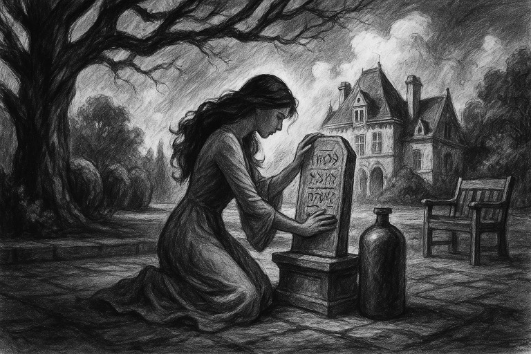
Место действия: сначала — в офисе на Рублёвке. Борисыч в белой рубашке, с телефонной трубкой, которая почему-то фонит.
— Алло… Алло! Да вы чё, у вас там что, Лубянка в ступоре?!
На другом конце — хрип, помехи, кто-то шепчет: «СКРИЖАЛИ… голоса… фрактал…»
— Я спрашиваю: что происходит?!
— …Королева…
— КТО?!
Борисыч резко встаёт.
— Она опять?
— …активность на протоколе… голосовой карантин…
— Что вы несёте?!
Он сбрасывает трубку, открывает окно. В голове отзвенело: «Папа — его имя все знают…»
Он щёлкает пальцами. Телохранитель кивает.
— Связаться с Тимуром. Срочно.
Место действия: VIP-зал с бассейном. Тимур Вахрамеев выходит из воды, берёт телефон, моргает от входящего потока сообщений.
«Сельницыны активны.»
«ФСБ закрыли речь по ‘Королеве’.»
«Позор Адама выведен в эфир.»
«На Лубянке говорят ‘Папа’ — в шёпот.»
Он бросает полотенце на кресло.
— Слишком рано.
Звонок.
— Да, Борисыч.
— Ты знал?
— Уже да.
— ФСБ глючит.
— Это не глюк. Это резонанс.
— Что делать?
Тимур отвечает коротко:
— Следить. Ничего не трогать. И держаться от слов подальше.
Пауза.
— А если она снова активна?
Тимур выдыхает:
— Тогда мы уже внутри. И остаётся только играть — по её правилам.
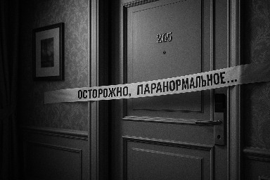
Место действия: Лубянка, Центр нестандартного анализа. Серые стены. Мигающий сервер. В комнате — генерал Перхов, аналитик Громов и куратор по международным каналам связи.
— Она не просто фигура, — говорит Перхов, глядя в протокол. — Она сгибает ветви вероятности. Она не действует — она корректирует причинность.
Громов, не отрываясь от монитора:
— По всем данным, в Дубае случилось что-то, чего в протоколах нет. Но все, кто соприкасался с объектом ‘Королева’, перестали быть теми, кем были.
Перхов кивает:
Архангел Михаил — исчез из деловых цепочек.
Будулай — не числится, но фигурирует.
Сельницыны — судимость, потеря рассудка.
Антон — барабан и петля.
— Нам нужно разобраться. Нам нужна вторая сторона.
Пауза.
Перхов нажимает кнопку на панели:
— Подключить канал к СИАЙДИ. Открываем двусторонний протокол по объекту ‘Королева’.
Место действия: Дубай. Зал связи СИАЙДИ. Арабские аналитики переглядываются, когда на экране появляется логотип ФСБ.
— Подключение с Лубянки. Запрос по делу ‘Королева’.
Начинается обмен:
«Требуется описать все инциденты, связанные с субъектом, включая феномены, отклонения, нарушения логики поведения оперативного состава, наличие фрактального воздействия, эпизоды паранормального характера.»
Ответ от СИАЙДИ:
«Наблюдались следующие признаки:
• Повторяющееся появление баллонов.
• Гипнотические реакции на имя.
• Протоколы исчезали из систем.
• Одежда архангела зафиксирована на неизвестном лице.
• Местные агенты отказываются входить в номер, где она жила.
• Знаки, вырезанные из меди, появляются сами.
• Один аналитик теперь разговаривает в рифму.»
Перхов и Громов читают.
— Это уже не расследование. Это погружение.
Перхов подписывает указ:
«Открыть дело ‘КОРОЛЕВА: ПЕРЕГИБ ПРОГНОЗИРУЕМОСТИ’. Назначить связного. Стартовать анализ событий в Дубае: фаза — взаимодействие.»
СИАЙДИ подтверждает:
«Контакт установлен. Добро пожаловать в клубок.»
Место действия: Центр обработки разведданных ФСБ. Поступают материалы из разных источников: официально через СИАЙДИ — от Будулая и Хамада, по неофициальным каналам — от ОМОНовцев и Борисыча.
Файл 1: Хамад.
«Выглядела как обычная богатая дурочка. Я подумал — пьяный кейс. Хотел по-быстрому закрыть всё через знакомых в полиции. Развёл её на 200 тысяч дирхам. Изи мани. Сам в шоке был — насколько легко и радостно она рассталась с деньгами. Потом, не понял как, но вынудил полицию пойти на мировую. Основное обвинение — Сопротивление полиции — ушло. И как бы… что-то я испортил в операции Будулая.»
Файл 2: Будулай.
«Хотел использовать её в бизнес-проекте. Понял, что опасная, решил нейтрализовать быстро. Пригласил в офис в Дейре. Она пришла одна. И с радостью. Думал — наивная дура. Но потом всё стало… как-то не так. Появились побочные эффекты. Не могу объяснить, но она… переворачивает сценарий.»
Файл 3: Борисыч.
«Ну было дело. Встречались в Химках. Участковый хотел с неё поиметь денег. Мы типо решили ‘помочь’ — и сами нагрелись. Развели на 600к рублей на месте. А она ещё и спасибо сказала. А теперь — ролик на Ютубе! Где она разъясняет, как силы правопорядка её нагибали на деньги. Думали — приедем в Дубай, мозги вправим. Прилетели бригадой. Теперь все на Ютубе.»
Файл 4: Франкенштейн.
Комментарий передан его командиром, Русланом (ОМОН):
«Как она с усадьбы свалила от чеченцев, нас зачем-то снова попросила туда войти и охранять. Деньги дала сразу, не жадничала. Мы с парнями решили: снимем ролик, покажем как отработали, бабки поделим и всё ок. Франкенштейн выдал царапину на голове за боевую травму от чеченцев. А потом Исмаил увидел это на Ютубе. Увидел, как мы его бандитом выставляем. Всё пошло по швам.»
Заключение ФСБ:
«Субъект ‘Королева’ обладает способностью инвертировать ход событий через простейшее взаимодействие. Лица, намеревавшиеся использовать её, оказываются втянутыми в публичное разоблачение или в системный сбой.»
Оперативная рекомендация:
«Не трогать. Не шантажировать. Не думать, что она не знает.»